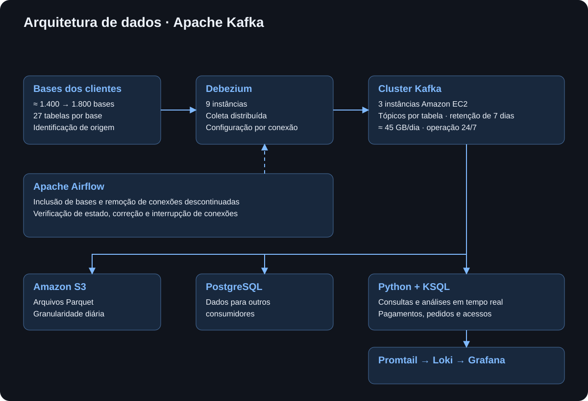

EXPERIÊNCIA PROFISSIONAL
Apache Kafka
Plataforma de CDC e streaming em tempo real para centralizar dados de mais de 1.800 bases PostgreSQL, com Kafka, Debezium, Airflow e AWS.
Minha contribuição
Recebi o problema de negócio e fui responsável por definir como a solução funcionaria tecnicamente. Trabalhei no desenho, implementação, testes, automação e operação da arquitetura. Projetei uma plataforma de CDC e streaming capaz de centralizar dados de mais de 1.800 bases PostgreSQL, mantendo coleta contínua, baixa latência e operação automatizada.
A solução combinava Kafka, Debezium, Airflow, Python, PostgreSQL, S3, KSQL e ferramentas de observabilidade. Além da infraestrutura, desenvolvi as rotinas responsáveis por criar e remover conexões, validar a saúde dos connectors, monitorar replication slots e executar ações preventivas antes que uma falha pudesse afetar os bancos dos clientes.
O problema
A empresa possuía aproximadamente 1.400 bases PostgreSQL de clientes com estruturas equivalentes. O desafio era transformar esse conjunto distribuído de dados em uma fonte central para análises, BI e monitoramento em tempo real.
A ideia inicial era formar um Data Lake no Amazon S3. Com o crescimento do volume e das necessidades de consumo, o S3 passou a assumir principalmente o papel de armazenamento histórico e backup: cada nova informação ou alteração era persistida em Parquet, organizada por dia e pela origem da base.
Ao mesmo tempo, parte dos dados precisava estar disponível quase imediatamente. Entre os casos de uso estavam alertas de volume anormal de compras, possíveis tentativas de fraude, problemas no gateway de pagamentos e falhas durante o processo de compra.
Por que Kafka e Debezium
O Kafka foi escolhido porque permitia desacoplar a captura das bases dos consumidores dos dados. Uma vez registrado no Kafka, um evento podia ser consumido novamente sem retornar ao banco de origem para reler aquela informação. A retenção foi configurada para sete dias, dando à operação uma janela para reprocessamentos, investigação e recuperação de estados anteriores.
Essa característica foi útil em produção. Em pelo menos duas situações, alterações realizadas por clientes precisaram ser revertidas e a informação anterior já não estava disponível de forma simples no sistema de origem. Como o evento original ainda permanecia no Kafka, foi possível recuperar o estado anterior sem consultar novamente toda a origem.
O Debezium foi adotado como camada de CDC por sua estabilidade e flexibilidade de configuração, além da possibilidade de trabalhar com diferentes connectors. Cada conexão exigia uma configuração extensa, com mais de 260 linhas de parâmetros, regras e tratamentos.
Arquitetura distribuída
O núcleo da solução utilizava três nós Kafka e nove instâncias Debezium. Cada uma das 27 tabelas monitoradas possuía um tópico correspondente, e cada tópico utilizava seis partitions. Como as bases tinham a mesma estrutura, os clientes compartilhavam os mesmos tópicos, enquanto cada registro carregava a identificação da base de origem e suas chaves de negócio.
As conexões eram distribuídas entre as nove instâncias Debezium de forma balanceada, evitando concentração de carga em um único nó. Em caso de indisponibilidade, o próprio ambiente distribuído realizava o rebalanceamento sem exigir intervenção manual.
O Kafka utilizava armazenamento em disco separado para os dados dos tópicos. A estratégia de replicação mantinha dois nós sincronizados e um terceiro com uma defasagem controlada de aproximadamente 10 MB, criando uma camada adicional de proteção operacional.

KRaft em uma fase inicial
Um dos desafios mais importantes foi adotar o Kafka em modo KRaft em um momento em que grande parte da documentação, dos exemplos e das discussões disponíveis ainda estava concentrada no ZooKeeper. Isso exigiu estudar os dois modelos, entender suas diferenças e validar cuidadosamente uma configuração que ainda era pouco comum no material disponível.
Depois de compreender como o KRaft assumia responsabilidades que tradicionalmente dependiam do ZooKeeper, ficou claro que esse modelo era mais adequado para a arquitetura que eu estava construindo. Toda a configuração, integração e validação do cluster foi feita diretamente por mim.
Automação desde o início
A escala tornava inviável administrar manualmente centenas ou milhares de connectors. Por isso, a automação fez parte da arquitetura desde o início. Rotinas Python orquestradas pelo Airflow criavam novas conexões, removiam bases descontinuadas, verificavam connectors existentes, identificavam falhas e reconstruíam conexões quando necessário.
Depois de estabilizado, o ambiente deixou de depender de intervenção diária. O acompanhamento operacional passou a ser essencialmente preventivo: uma verificação diária da saúde da plataforma era suficiente para confirmar que a infraestrutura, os connectors e o fluxo de dados continuavam operando normalmente.
O risco dos replication slots
Como as fontes eram PostgreSQL, um ponto crítico eram os replication slots utilizados pelo Debezium. Se uma conexão permanecesse interrompida por muito tempo, o PostgreSQL poderia continuar acumulando WAL para aquele slot. Sem controle, esse crescimento poderia consumir o espaço em disco do servidor e afetar o próprio banco do cliente.
Desenvolvi rotinas de monitoramento específicas para esse risco. O processo verificava o estado do connector e do replication slot e, quando necessário, removia a conexão problemática, eliminava o slot e reconstruía a integração. Bases removidas também tinham seus connectors e slots limpos automaticamente.
Como última camada de proteção, desenvolvi uma rotina que chamava de parada de emergência. Em uma situação crítica, ela era capaz de interromper todas as conexões e remover os replication slots em aproximadamente dois minutos, protegendo os bancos de origem.
Evolução da arquitetura
A primeira implementação chegou a operar com aproximadamente 25 a 32 instâncias Debezium em containers executados no ECS, com escalabilidade automática e uso de instâncias Spot. A solução funcionava e não causava perda de dados, mas a substituição frequente das máquinas exigia reconstrução de conexões, aumentava a complexidade operacional e contribuía para um custo elevado.
A arquitetura foi então simplificada. Houve uma validação com MongoDB, mas, por se tratar de dados fortemente estruturados e por existir maior domínio interno de PostgreSQL, a camada central de persistência passou a utilizar PostgreSQL.
O PostgreSQL central concentrava os dados provenientes dos tópicos e atendia tanto consultas de monitoramento quanto consumo analítico. O Dremio era utilizado como camada de consulta para BI, enquanto o S3 mantinha o histórico em Parquet.
Baixa latência e consumo
Do momento em que uma alteração acontecia no PostgreSQL de origem até sua disponibilidade no PostgreSQL central, o fluxo levava aproximadamente 15 a 20 segundos. Essa latência permitia utilizar a mesma arquitetura tanto para análises quanto para alertas operacionais em tempo quase real.
Os eventos também podiam ser consultados diretamente com KSQL e processados por rotinas Python. Parte dos dados alimentava BI; outra parte era utilizada para detectar comportamentos que precisavam de atenção imediata, como volumes de compra fora do padrão, possíveis tentativas de fraude e falhas no fluxo de pagamento.
Observabilidade e operação preventiva
Grafana, Loki e Promtail eram utilizados para acompanhar a saúde da infraestrutura e do fluxo. O monitoramento permitia observar condições das instâncias, sinais de sobrecarga e o funcionamento geral da plataforma.
Paralelamente, o Airflow executava verificações automáticas sobre todas as conexões. Em vez de esperar que uma falha se transformasse em incidente, as rotinas buscavam sinais de problema e executavam ações corretivas ou reconstruíam os connectors quando necessário.
Crescimento sem redesenhar a solução
O ambiente começou com aproximadamente 1.400 bases conectadas e, ao longo do projeto, ultrapassou 1.800. Mesmo com o aumento das conexões e do volume de dados, a arquitetura inicial permaneceu estável e não exigiu redesenho para suportar o crescimento.
Durante os dois anos e quatro meses em que fui responsável pela solução, também realizei atualização de versão do Kafka mantendo o ambiente operacional. Ao final do período, os processos de conexão, manutenção e recuperação estavam automatizados e a plataforma continuou funcionando sem depender de intervenção manual.
Resultado
O resultado foi uma plataforma de dados distribuída que transformou mais de 1.800 bancos isolados em uma fonte central de informação. A arquitetura suportava ingestão contínua, retenção para reprocessamento, histórico em Parquet, consumo analítico e monitoramento em tempo quase real.
Para mim, o principal resultado técnico não foi apenas colocar Kafka e Debezium em produção, mas construir uma solução capaz de crescer, se recuperar automaticamente e continuar operando mesmo com milhares de conexões. Quando deixei o projeto, toda a operação já estava automatizada e o ambiente continuava funcionando com a mesma arquitetura.